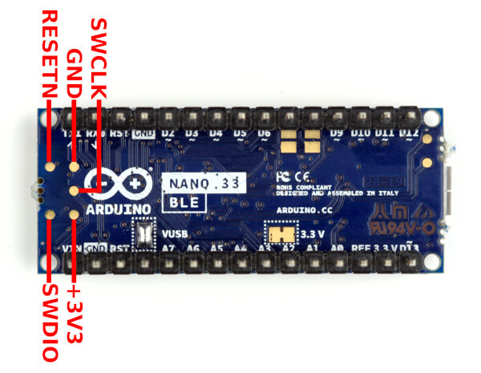
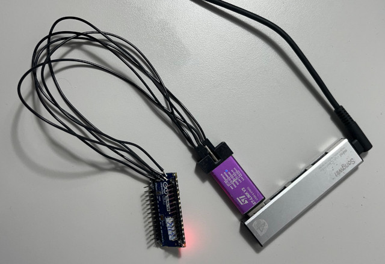
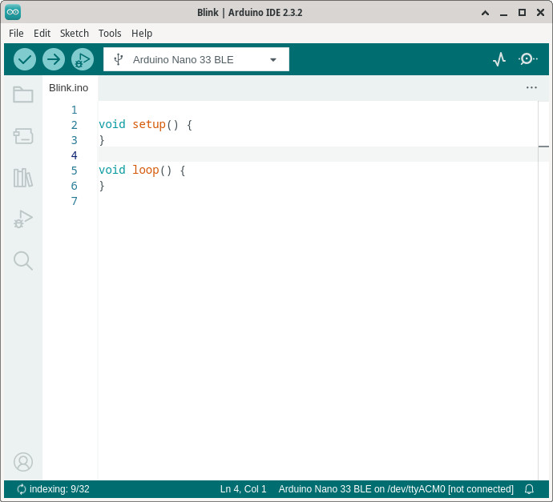
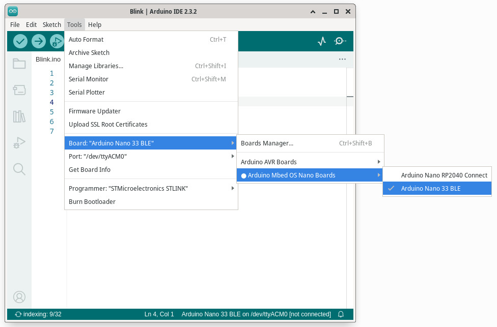
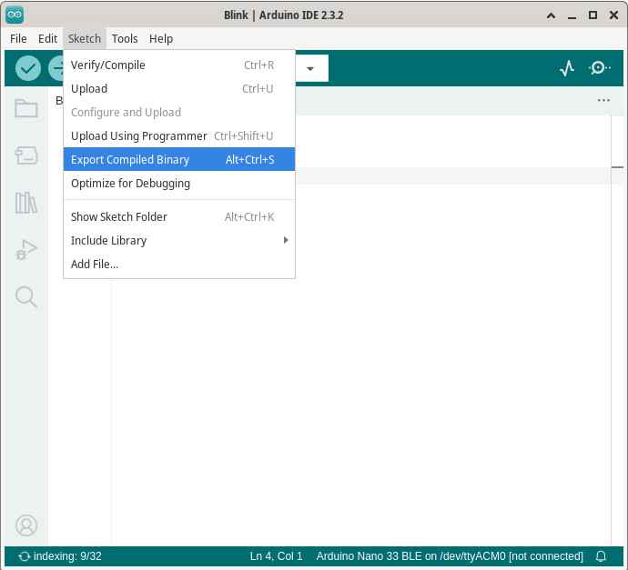

Steward
分享是一種喜悅、更是一種幸福
微處理器 - Nordic Semiconductor nRF52840 (Arduino Nano 33 BLE) - 如何透過ST-LINK V2燒錄程式(OpenOCD)
參考資訊：
https://forum.arduino.cc/t/how-to-flash-a-bootloader/900260/3
Arduino Nano 33 BLE SWD腳位如下：

連接ST-LINK v2

寫一個簡單的空殼程式

選擇Arduino Nano 33 BLE

導出Firmware

安裝OpenOCD
$ cd $ git clone git://repo.or.cz/openocd.git $ cd openocd $ ./bootstrap $ ./configure $ make $ sudo make install
燒錄Firmware(使用xxx.ino.with_bootloader.bin，xxx.ino是你的專案名稱)
$ sudo openocd -f /usr/local/share/openocd/scripts/interface/stlink.cfg -f /usr/local/share/openocd/scripts/target/nrf52.cfg -c "program xxx.ino.with_bootloader.bin reset exit 0"
Open On-Chip Debugger 0.12.0+dev-00657-g7f2d3e292 (2024-07-14-09:25)
Licensed under GNU GPL v2
For bug reports, read
http://openocd.org/doc/doxygen/bugs.html
Info : auto-selecting first available session transport "hla_swd". To override use 'transport select '.
Info : The selected transport took over low-level target control. The results might differ compared to plain JTAG/SWD
nRF52 device has a CTRL-AP dedicated to recover the device from AP lock.
A high level adapter (like a ST-Link) you are currently using cannot access
the CTRL-AP so 'nrf52_recover' command will not work.
Do not enable UICR APPROTECT.
Info : clock speed 1000 kHz
Info : STLINK V2J17S4 (API v2) VID:PID 0483:3748
Info : Target voltage: 3.207330
Info : [nrf52.cpu] Cortex-M4 r0p1 processor detected
Info : [nrf52.cpu] target has 6 breakpoints, 4 watchpoints
Info : [nrf52.cpu] Examination succeed
Info : [nrf52.cpu] starting gdb server on 3333
Info : Listening on port 3333 for gdb connections
[nrf52.cpu] halted due to debug-request, current mode: Thread
xPSR: 0x01000000 pc: 0x00003ef8 msp: 0x20008d48
** Programming Started **
Info : nRF52840-QI/CAAA(build code: D0) 1024kB Flash, 256kB RAM
Warn : Adding extra erase range, 0x00061798 .. 0x00061fff
** Programming Finished **
** Resetting Target **
shutdown command invoked